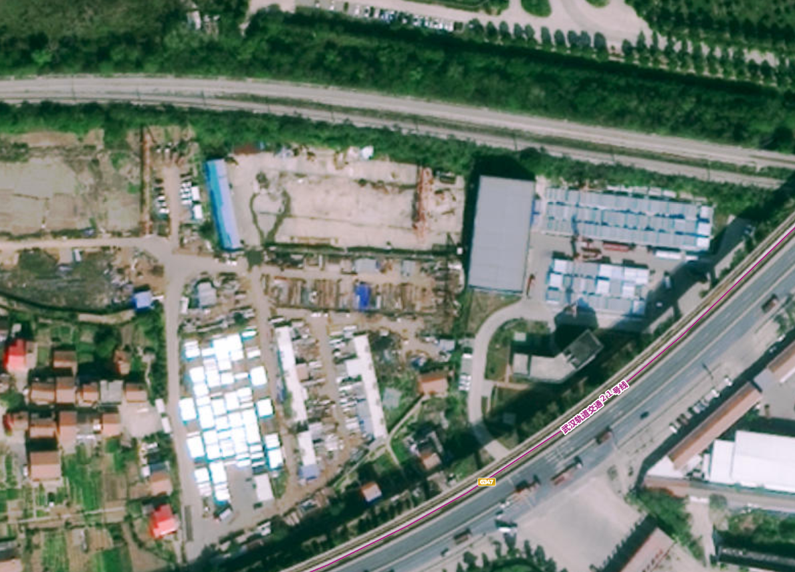

智慧水肥平台 水肥一体化
灌溉 56 次 / 施肥 38 次 / 7 阀门在线 · 利用率 92%
累计灌溉
56次
↑ 本周 12 次
累计施肥
38次
↑ 本周 8 次
在线阀门
7/7
全部在线
水肥利用率
92%
↑ 5%
各棚灌溉
1#棚12 次 · 4.2t
3#棚14 次 · 5.8t
4#棚11 次 · 4.0t
施肥计划
红颜·膨果期钾肥 8kg/亩
章姬·花期磷钾 6kg/亩
淡雪·营养期平衡肥 10kg
管网状态
F-01~F-06在线
F-03通信中断
主管压力0.28 MPa
GIS 灌溉渠网分布 项133
水肥一体化设备及渠道灌溉网 GIS 分布 · 点击查看设备简介

水肥首部
A区首部
B区首部
设备简介
| 编号 | 设备 | 位置 | 用途 | 状态 |
|---|---|---|---|---|
| WF-001 | 水肥一体机 | 水肥首部 | 配肥+灌溉总控 | 在线 |
| F-01~F-06 | 电磁阀 | A/B区管网 | 分区灌溉控制 | 在线 |
| F-03 | 电磁阀 | 3#棚入口 | — | 通信中断 |
| P-01 | 压力传感器 | 主管 | 管网压力监测 | 在线 |
| FL-01 | 流量计 | 主管 | 用水量计量 | 在线 |
远程控制 ▲ 项135
电磁阀 / 智能球阀 / 水肥机 远程自动化控制 · 施肥灌溉计划执行
电磁阀控制
F-01 · 1#棚
F-02 · 2#棚
F-03 · 3#棚
F-04 · 4#棚
F-05 · 5#棚
F-06 · 6#棚
水肥机总控
设备状态运行中
EC 值1.6 mS/cm
PH 值6.4
当前配方15-10-30 膨果期
肥料余量68%
灌溉计划
| 时间 | 区域 | 时长 | 状态 |
|---|---|---|---|
| 06:00 | 1~4#棚 | 20min | 已完成 |
| 16:00 | 5~8#棚 | 25min | 待执行 |
| 明 06:00 | 1~4#棚 | 20min | 已排程 |